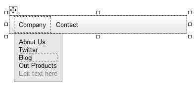

The Navigation Menu component gives you the possibility to create a drop down menu with links on your website. It looks like this:

Creating a Menu
By using the 'Navigation Menu' entry of the Toolset or the menu command 'Insert -> Navigation Menu', you can place the menu on the website. Once you placed your menu, you can click the 'Edit text here' text and enter new menu entries directly in the editor. It is possible to select a font, color and font size for each menu entry individually. If you want to change the font for multiple menu entries at once, simply select one menu entry, hold down the 'Shift' key on your keyboard and click other menu entries to select them as well. Then, you can choose a new font as usual.
Special Entries
The menu supports horizontal lines as menu entries. Simply set the text of a sub menu to "-" (=a minus symbol), and if you click 'preview' to view your website in the browser, this menu entry will appear as a horizontal line.
Properties
This component supports several background modes (Color, Image, Gradient), changeable by selecting the property 'BackgroundMode'. It also supports several border modes. The background will only be visible if the image files cannot be loaded or the currently shown image is transparent. If you want even different backgrounds, simply set the background and border to trnasparent and invisible and place any other element behind the menu bar.
Other supported properties are:
Mobile Menu
Each navigation menu comes with a second menu, which is shown on smaller screens, if the property "MobileMenu" is set to 'Automatically Generated' or 'Manually Filled'. You can see this mobile menu in Rocketcake if you drag the view slider on the bottom of the page to a small area, or if you select a mobile device on the bottom combo box, like for example "iPhone 7". By default, this menu is generated from your 'Desktop' menu, but when set to the 'Manually Filled' mode, you can edit this mobile menu just like the normal menu.
The advantage of this second menu is that you can arrange the menu items in a more compact way in that menu, so that everything fits on the screen also on mobile devices.
Shadow For the Menu
You can make the dropdown menu have a shadow. For that, just open the menu, right-click onto it, and select "Box Shadow". There you can enable and edit shadows for the dropdown menu.
Copyright © by Ambiera e.U.